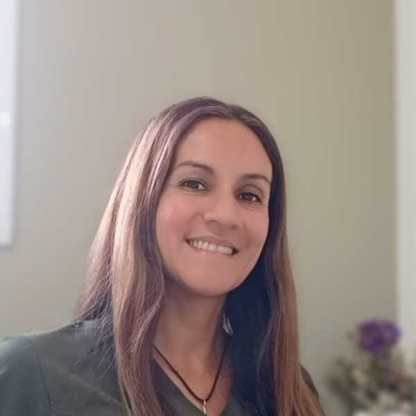

Atención personalizada para potenciar tu comunicación, voz y deglución en todas las etapas de la vida.
Solicitar Turno
Soy una Fonoaudióloga con experiencia en el tratamiento de niños, adolescentes y adultos. Mi enfoque se basa en brindar una atención cálida, humana y basada en evidencia científica, adaptando cada terapia a las necesidades únicas de cada paciente para mejorar su calidad de vida.
Evaluación y tratamiento del lenguaje, tartamudez y dificultades en la articulación y pronunciación.
Rehabilitación de las funciones del sistema estomatognático, respiración bucal y deglución atípica.
Evaluación y abordaje terapéutico de alteraciones y dificultades en el proceso de la deglución.
Te facturamos y pedís el reintegro en tu prepaga u obra social. Sujeto a la cobertura de cada plan.
Las sesiones tienen una duración aproximada de 40 a 45 minutos, dependiendo del tratamiento y la edad del paciente.
Si tenés alguna duda o querés pedir un turno, escribinos acá y te responderemos a la brevedad.